Instant Smart Scan
Scan Laravel, WordPress, and plain PHP apps with domain suggestion, document-root inference, and runtime hints.
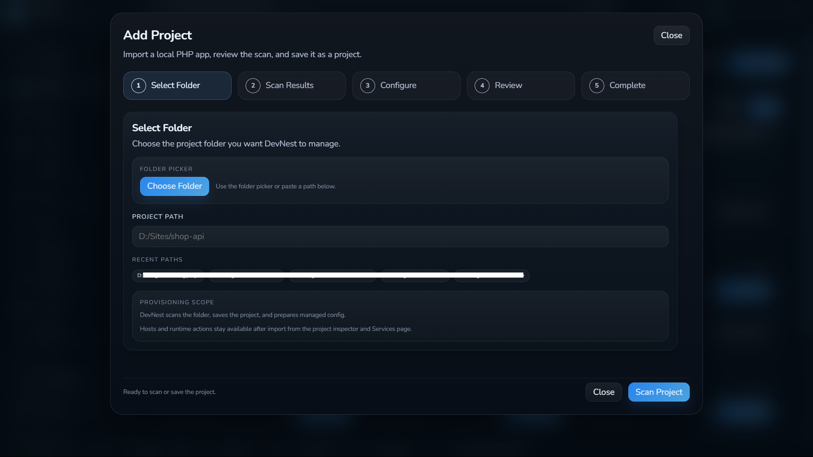
DevNest helps Laravel, WordPress, and plain PHP projects on Windows with Smart Scan, Apache, Nginx, FrankenPHP, readable diagnostics, sharing, recovery, and automation.
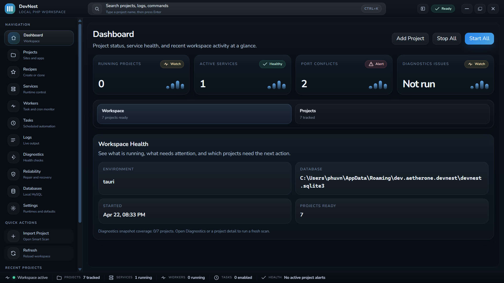
 Laravel
Laravel WordPress
WordPress Apache
Apache Nginx
Nginx MySQL
MySQL Cloudflare
CloudflareDevNest makes Windows PHP development feel calmer, faster, and easier to reason about.
Scan Laravel, WordPress, and plain PHP apps with domain suggestion, document-root inference, and runtime hints.

Port conflicts, document-root mistakes, SSL trust issues, missing PHP extensions, and startup failures turn into practical next steps.
Managed config, hosts automation, SSL, phpMyAdmin, Mailpit, Redis, FrankenPHP, workers, scheduled tasks, and env visibility.
Use FrankenPHP as a managed Windows web server lane. Classic mode stays simple, while Laravel projects can opt into an Octane Worker behind the same local domain.
Backup and restore are there, but Database Time Machine is what makes rollback fast, managed, and less stressful.
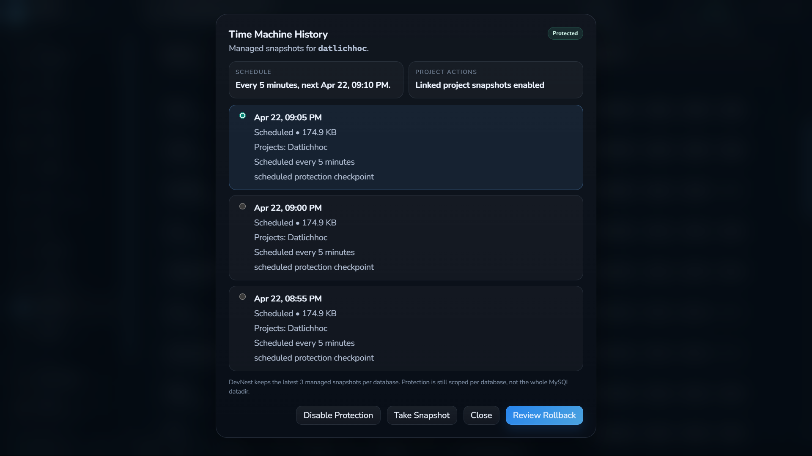
The project stays central. Local domain, runtime, diagnostics, sharing, and automation all hang off that model.
Check the signed Windows release feed, then install packaged updates without leaving DevNest.
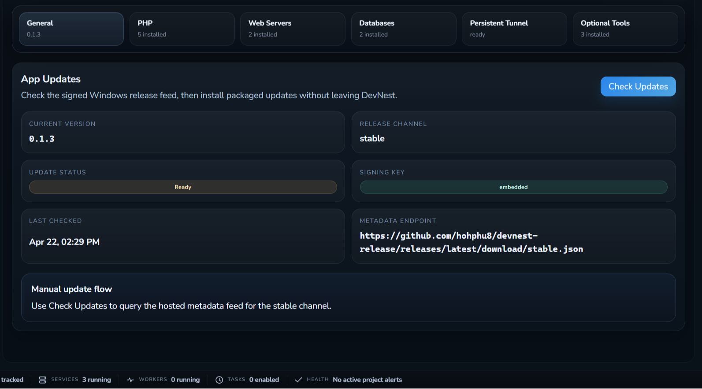
Same-WiFi QR preview for quick phone checks, plus Cloudflare tunnel flows when you need a public URL.
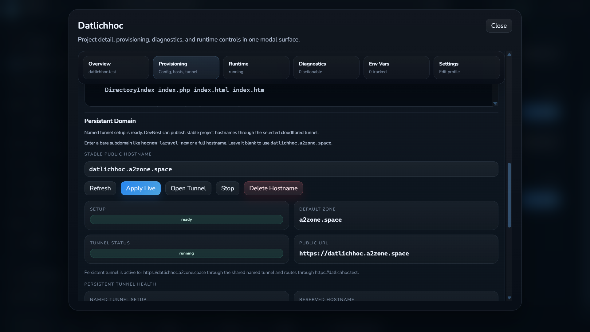
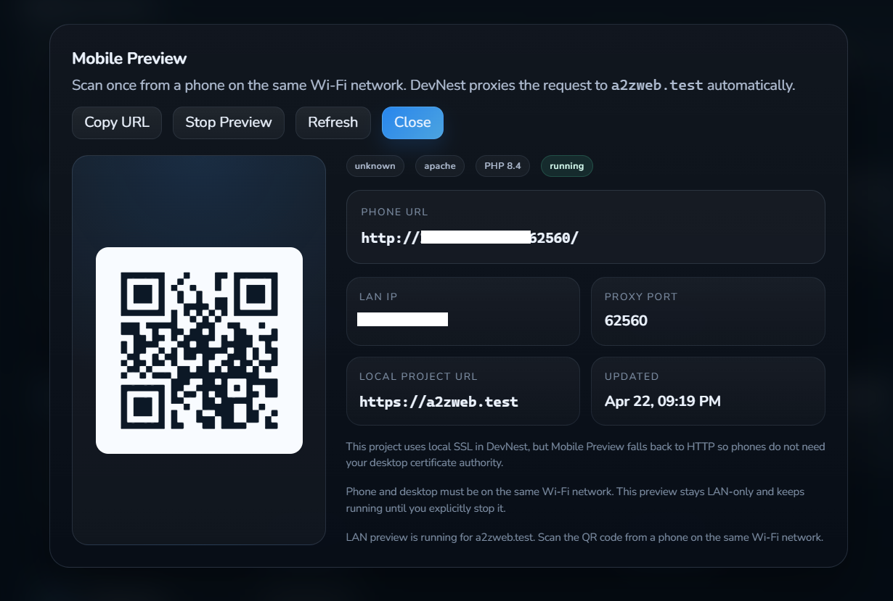
DevNest is built around how Windows PHP developers actually work day to day.
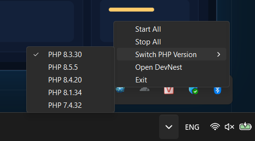
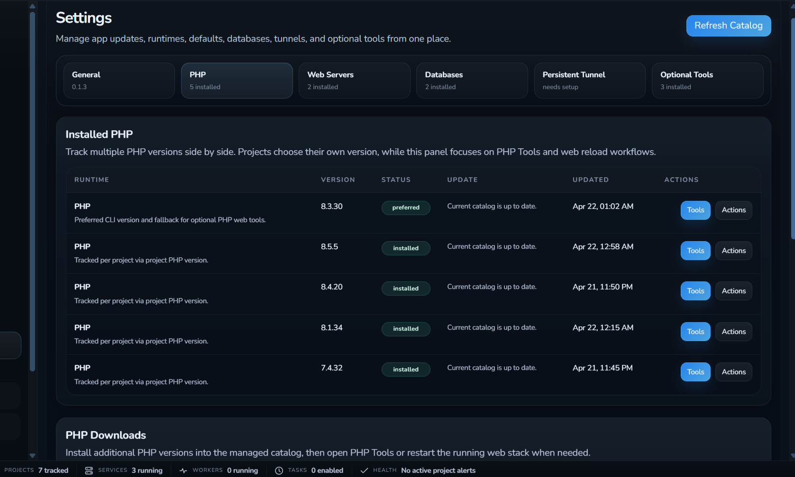
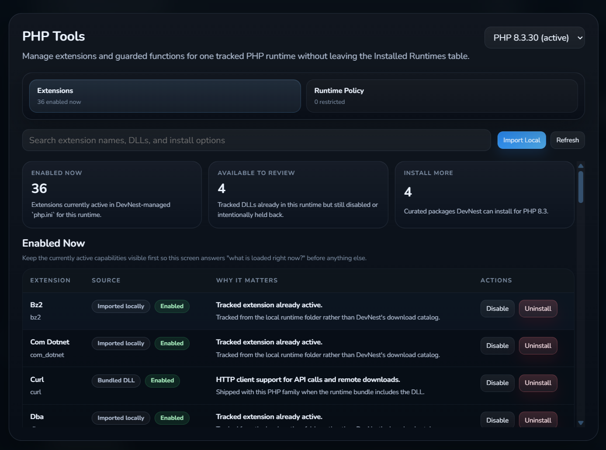
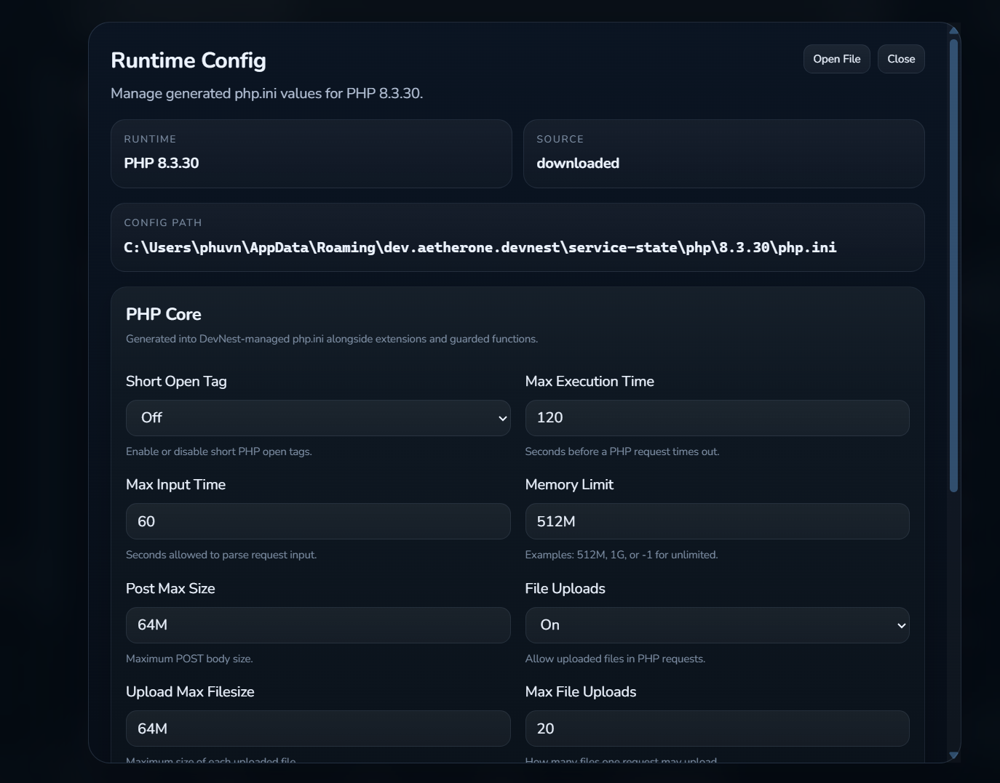
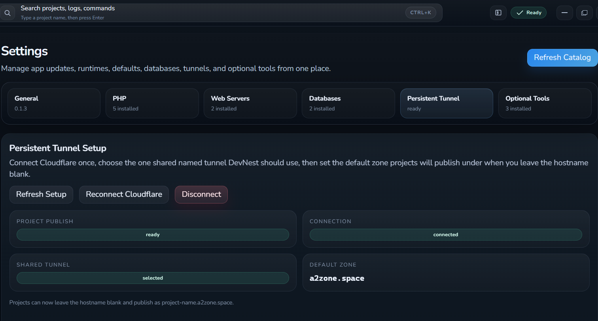
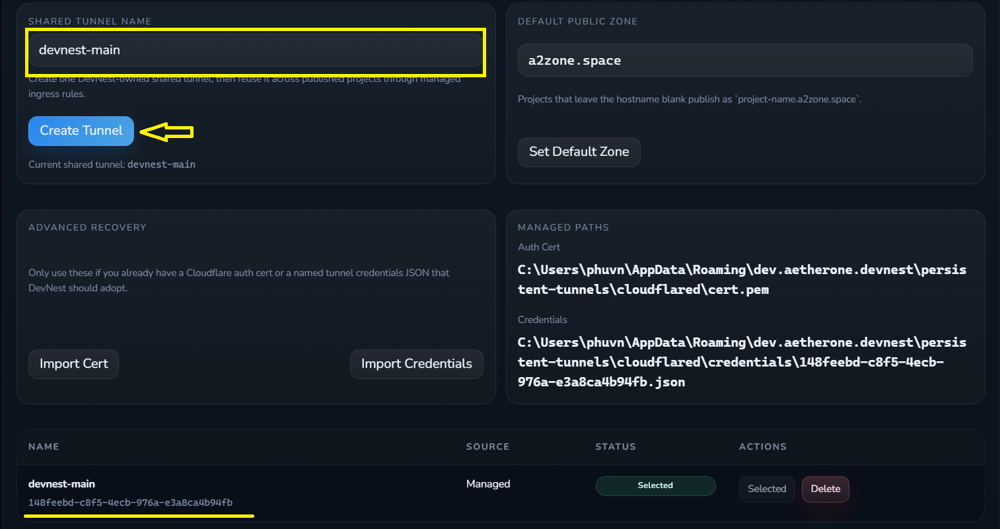
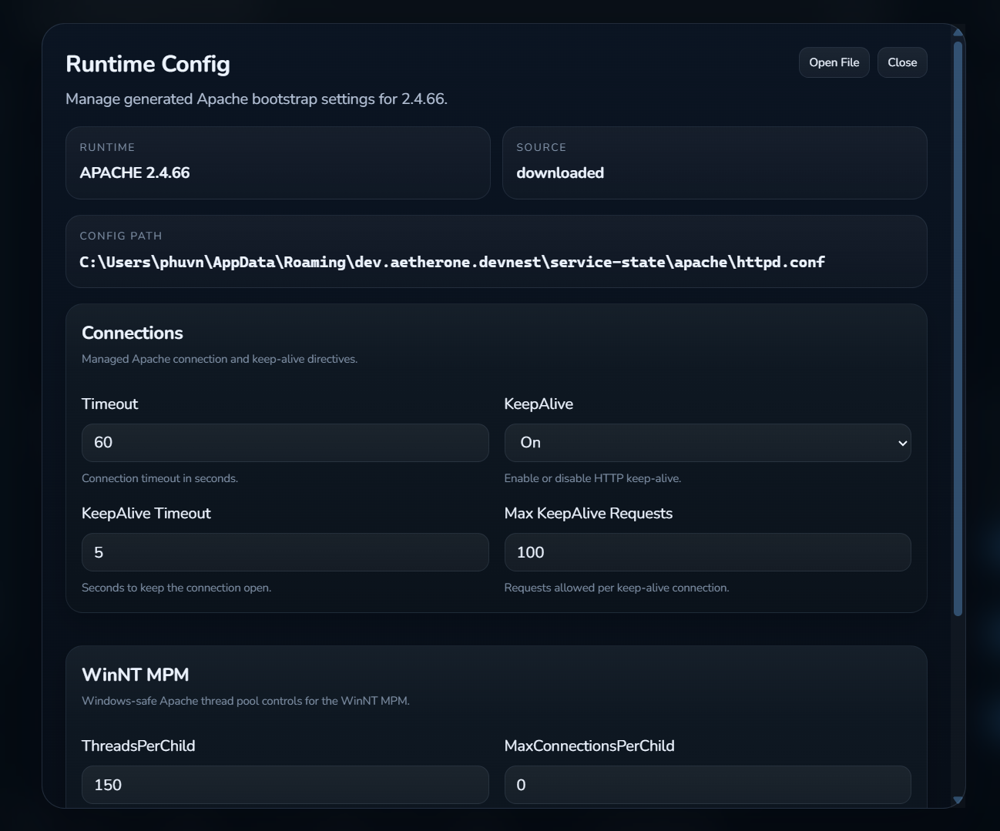
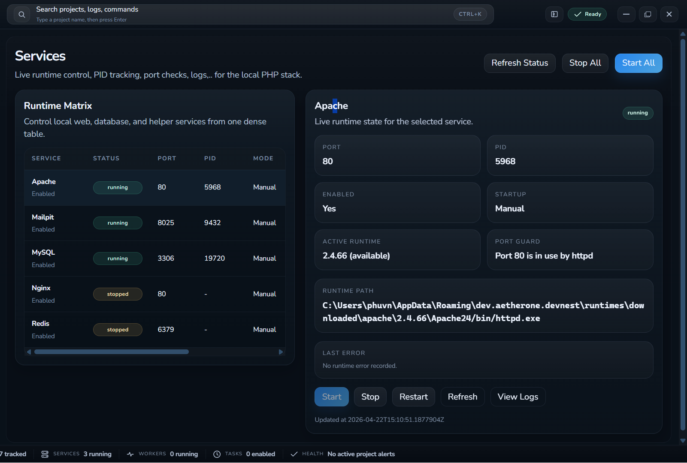
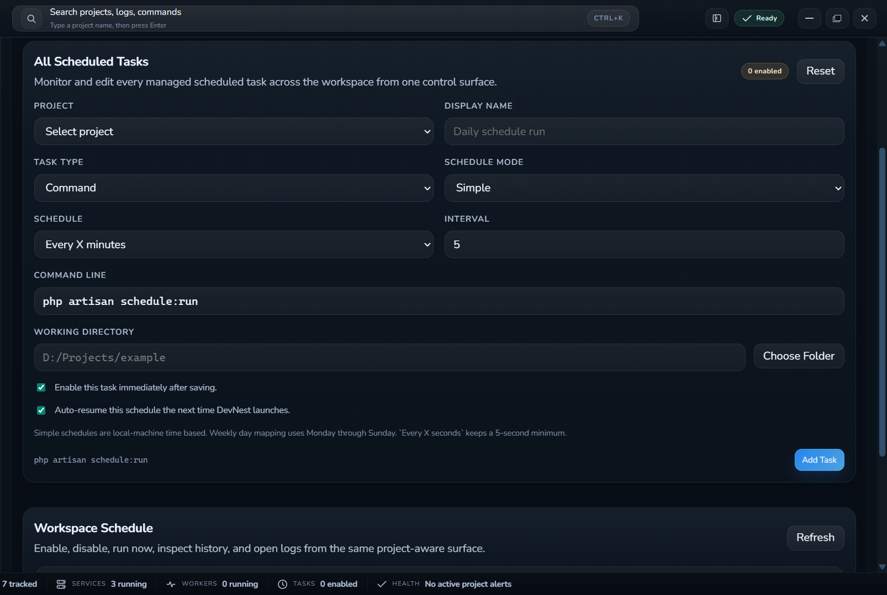
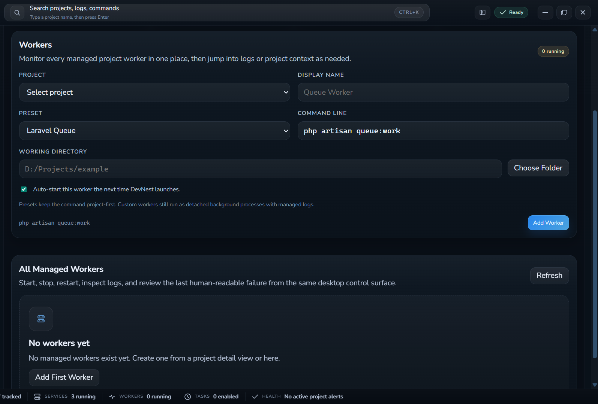
If Laragon or XAMPP already fits your workflow, that is fine. DevNest is for Windows PHP developers who want the local stack to stay attached to the project instead of living as a separate control panel.
Laragon is fast and familiar, but DevNest goes harder on project context: Smart Scan, managed runtime selection, readable diagnostics, QR preview, workers, scheduled tasks, and database rollback all stay inside one project flow.
XAMPP gives you the basics, but DevNest is built for a modern Windows PHP workflow where multiple projects need different runtimes, clearer errors, local sharing, and less manual config editing.
Do not take our word for it. The product should make sense at a glance: import, run, diagnose, share, recover.
"Import the project, see the runtime shape, then fix real issues instead of redoing local setup."
"The app is strongest when a broken local environment becomes a readable state instead of a guessing game."
"Database rollback, workers, and scheduled tasks belong in the project workflow, not a forgotten terminal window."
"Same-WiFi QR preview and Cloudflare sharing solve different jobs. DevNest covers both without confusion."
Ship it through GitHub Releases, keep the source open on GitHub, and add a soft support link later if you want to fund more polish.
Prepare for a local PHP environment that can keep pace with the project instead of fighting it.